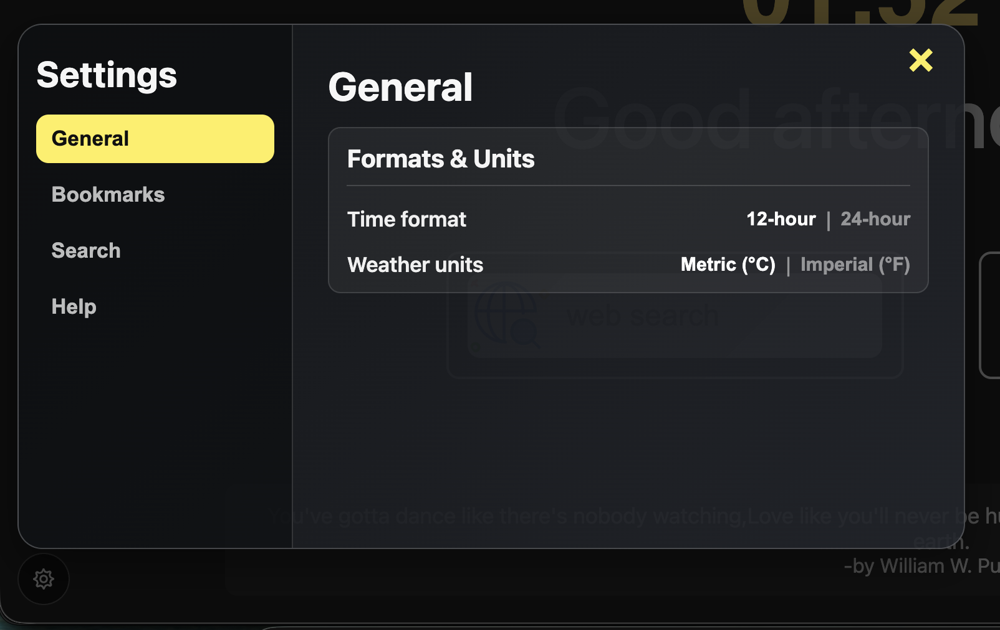
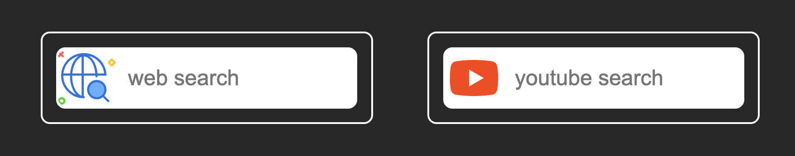
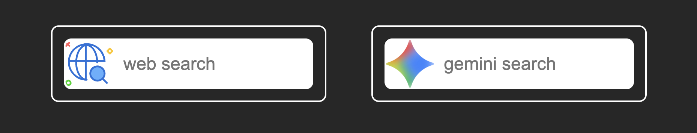

A faster, cleaner dashboard with powerful personalization and shortcut controls.
Bottom-left settings popup with dedicated tabs for General, Bookmarks, Search, and Help.
Choose secondary provider (YouTube, ChatGPT, Gemini, Claude, Copilot) and set open-in-new-tab behavior.
Configure bar position, icon-only mode, and open targets with live updates.
Quick keyboard access for settings, bookmarks, and both search bars.
A new bottom-left settings popup gives quick control over General, Bookmarks, Search, and Help preferences.

Pick your secondary provider and get matching icon + search behavior instantly.

